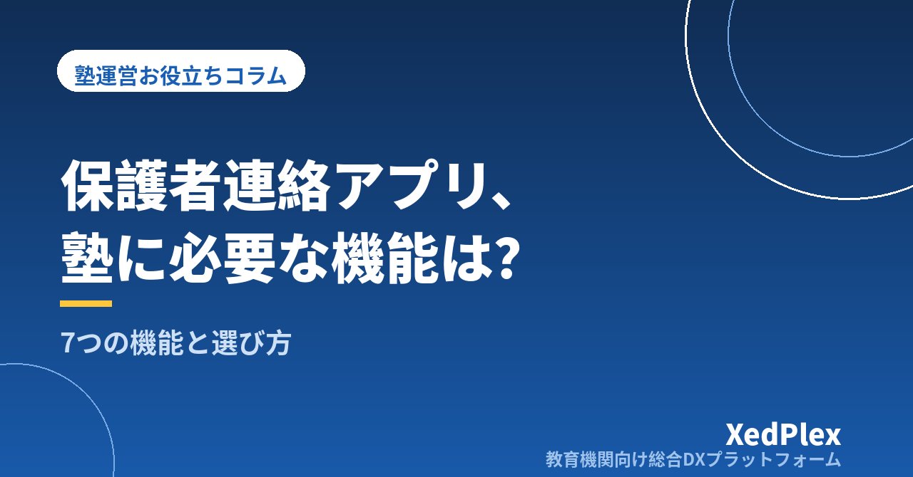

保護者向け連絡アプリ、塾に必要な機能は？｜「おすすめ○選」の前に整理したい7つの機能と選び方

保護者への連絡は電話とメール、急ぎのときは講師のLINE──。そんな運用を続けてきたものの、入塾面談で保護者から「連絡用のアプリはないんですか？」と聞かれてドキッとした。個人塾・小規模塾の塾長から、よく聞く話です。
検索すれば「保護者連絡アプリおすすめ○選」という記事がいくつも出てきます。しかし、サービス名と料金を見比べるだけでは、自塾に合うものは選べません。大切なのは、自塾の保護者連絡に「どの機能が」「どの順番で」必要かを、比較の前に整理しておくことです。この記事では、塾の保護者連絡に求められる7つの機能と優先順位、無料ツールとの使い分け、保護者にきちんと使ってもらうための導入手順を、小規模塾の実務目線でまとめます。
なぜ今、塾に「連絡アプリ」が求められるのか
保護者連絡のデジタル化が進んでいる背景には、家庭側と塾側、双方の事情があります。
- 日中の電話がつながらない：共働きの家庭では、勤務中に塾からの電話に出るのは難しく、留守電と折り返しのすれ違いだけで一日が終わることもあります。
- 紙のプリントは届かない：生徒経由で渡したお知らせが、カバンの底に眠ったまま保護者の目に触れない──これは昔から変わらない悩みです。
- 「無事に着いたか」を知りたい：小中学生の場合、夕方以降にひとりで通塾する子も多く、教室に着いたかどうかは保護者の大きな関心事です。
- 塾側も電話対応が負担：少人数で回す塾では、授業前後の電話対応が授業準備の時間を直接削ります。
ただし、注意したいのは「アプリを入れること」自体は目的ではない、という点です。目的は、連絡が確実に届き、読まれ、記録が残る仕組みをつくること。この目的に照らして、必要な機能を確認していきましょう。
塾の保護者連絡に必要な7つの機能
塾と保護者の間でやり取りされる連絡を棚卸しすると、必要な機能はおおむね次の7つに整理できます。
| 機能 | 解決される場面 |
|---|---|
| 1. 入退室通知 | 「ちゃんと塾に着いた？」という保護者の不安 |
| 2. 一斉配信 | 休講・行事・お便りなど全体へのお知らせ |
| 3. 欠席連絡の受付 | 授業前に集中する欠席の電話 |
| 4. 個別メッセージ | 電話するほどではないが伝えたい個別の連絡 |
| 5. 指導報告 | 「塾で何をやっているのか見えない」という不満 |
| 6. 請求の連絡 | 月謝額の通知や集金に関する行き違い |
| 7. 面談・予定の連絡 | 面談日程の調整と直前のリマインド |
土台になる機能（1〜3）
入退室通知は、保護者連絡のデジタル化でもっとも価値が伝わりやすい機能です。生徒が教室に着いた・出たタイミングが自動で保護者に届けば、「無事に着いたかな」という毎回の不安がなくなります。QRコードやカードで記録する方式なら、塾側の出席簿を兼ねられるのも利点です。方式ごとの比較は「小さな塾でもできる入退室管理」で詳しく書きました。
一斉配信は、紙のプリントと電話連絡網の置き換えです。休講のお知らせのように「全員に、確実に、すぐ」届けたい連絡がある塾では必須になります。誰が読んだかを確認できると、未読の家庭だけに追いかけの連絡ができます。
欠席連絡の受付は、塾側の負担軽減に直結します。授業直前に集中する欠席の電話をフォームやメッセージで受けられれば、電話番のために手を止める必要がなくなり、連絡の記録も自動的に残ります。欠席を受けたあとの振替をどう回すかは、「塾の欠席・振替管理のルール作りと運用」で整理しています。
信頼をつくる機能（4〜5）
個別メッセージは、電話とメールの中間にあたる連絡手段です。「今日は少し元気がなかった」「宿題が続けて出ていない」といった、電話をかけるほどではないけれど伝えたいことを、記録が残る形でやり取りできます。担当講師の個人スマホではなく、塾としての窓口でやり取りできることが重要です。
指導報告は、退塾防止の観点でもっとも効く機能です。保護者の不満の多くは「塾で何をやっているのか見えない」ことから生まれます。今日の学習内容や様子が定期的に届くだけで、月謝への納得感は大きく変わります。この点は「退塾を防ぐ保護者コミュニケーションの仕組み」で詳しく扱いました。
事務を効率化する機能（6〜7）
請求の連絡は、月謝額のお知らせや集金に関する連絡が、日々の連絡と同じ場所で届く状態が理想です。「請求書は紙、連絡はアプリ、質問は電話」とバラバラになっていると、行き違いが起きやすくなります。
面談・予定の連絡は、面談シーズンの日程調整を楽にします。候補日の提示や前日のリマインドが仕組みでできると、「うっかり忘れ」による空振りが減ります。
「専用アプリのインストール」だけが正解ではない
ここまで「アプリ」と書いてきましたが、実は保護者に専用アプリをインストールしてもらうことが唯一の正解ではありません。むしろ小規模塾では、次の理由からインストールのハードルが問題になりがちです。
- アプリを入れてもらえない家庭が一定数残り、その家庭だけ電話・紙の運用が続いて二重管理になる
- インストールしても通知をオフにされると、配信が届かない
- スマホの空き容量や操作の得意・不得意は家庭によって差が大きい
そこで確認したいのが、LINEやメールなど、保護者が普段から使っている手段に通知を届けられるかという点です。新しい習慣を求めるのではなく、いつもの受信箱に塾からの連絡が届く形なら、登録のハードルは大きく下がります。また、外国にルーツのある家庭が通う塾では、画面やお知らせを多言語で表示できる仕組みがあると、日本語の文面だけでは伝わりにくい連絡の助けになります。
なお、「とりあえずLINEでつながればいいのでは」と考えて講師の個人LINEを窓口にするのは、情報管理の面でもリスクが大きいやり方です。詳しくは「塾の保護者連絡、講師の個人LINE頼みは危険？」をご覧ください。
無料ツールで始めるか、塾専用のサービスにするか
連絡のデジタル化は、LINE公式アカウントやメールの一斉送信といった無料・低コストのツールでも始められます。ただし、塾の実務で使い続けると、次の違いが効いてきます。
| 観点 | 汎用の無料ツール | 塾専用のサービス |
|---|---|---|
| 名簿との連携 | 連絡先を別途管理し、入退塾のたびに手作業で更新 | 生徒名簿と連絡先が一体で、退塾処理も一度で済む |
| 入退室通知 | 基本的にできない | QRコード等の記録と連動して自動送信できるものが多い |
| 個別連絡の記録 | 担当者の端末に散らばりやすい | 塾の窓口として履歴が一元管理される |
| 請求との連携 | 別ツールになり、二重管理が生じる | 請求・入金の管理と同じ基盤で運用できるものがある |
生徒数が少ないうちは無料ツールでも回りますが、「一斉配信だけで足りているか」「連絡先の管理が名簿と二重になっていないか」が見直しのサインです。塾専用のサービスは生徒数に応じた従量課金が主流なので、小規模のうちは月々の負担を抑えて始められるものを選ぶとよいでしょう。連絡機能単体ではなく、名簿・請求とつながったシステムとして選ぶ際の考え方は、「小規模塾のためのシステム選び5つの基準」にまとめています。
保護者に使ってもらうための導入3ステップ
どんなに良い仕組みを選んでも、保護者が登録してくれなければ意味がありません。導入時は次の3ステップを踏むと、つまずきにくくなります。
- 保護者のメリットから案内する：「塾の事務効率化のため」ではなく、「お子さまの入退室が届くようになります」「欠席連絡が24時間いつでも送れます」と、保護者側の利点を先に伝えます。入退室通知から始めると価値が伝わりやすく、登録が進みます。
- 移行期間は併用し、登録状況を確認する：切り替え直後の1〜2か月は従来の連絡手段と併用し、未登録の家庭には面談や送迎のタイミングで個別に声をかけます。「全員に届く状態」ができてから紙や電話を減らします。
- 運用ルールを決めて塾内で共有する：メッセージへの返信は翌営業日まで、緊急時は電話、深夜の送信はしない──といったルールを決めて保護者にも伝えておくと、「すぐ返信が来ない」という不満や、塾長が夜中までスマホを手放せない事態を防げます。
まとめ
塾の保護者連絡アプリ選びは、サービス名の比較から入ると迷子になります。まず、入退室通知・一斉配信・欠席連絡の受付という土台の3機能から、個別メッセージ・指導報告、請求・面談の連絡まで、自塾にどの機能がどの順番で必要かを整理する。そのうえで、保護者が普段の手段で受け取れるか、名簿や請求とつながっているかを確かめる。この順番で見れば、「おすすめ○選」の記事も自塾の物差しで読めるようになります。まずは今週、保護者との連絡を「電話・紙・個人LINE」のどれで何件やり取りしたか、数えてみるところから始めてみてください。
この記事を書いた運営より
私たちは、個人経営・小規模の学習塾向けに、生徒管理・QRコードでの入退室記録・月次請求・保護者へのLINE/メール通知・AIによる学習支援までをひとつにまとめた教育機関向け総合DXプラットフォーム「XedPlex（ゼドプレックス）」を開発・提供しています。初期費用は0円、料金は生徒1名あたり月額300円（税込）から。生徒50名の塾なら月15,000円（税込）です。全国8つの教室で導入されており、導入塾には紹介ホームページの無料作成も行っています。機能の詳細説明はこちら。
XedPlexの詳細を見る